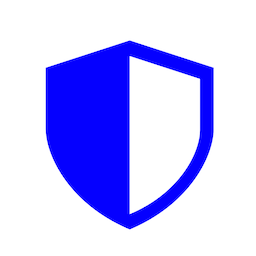
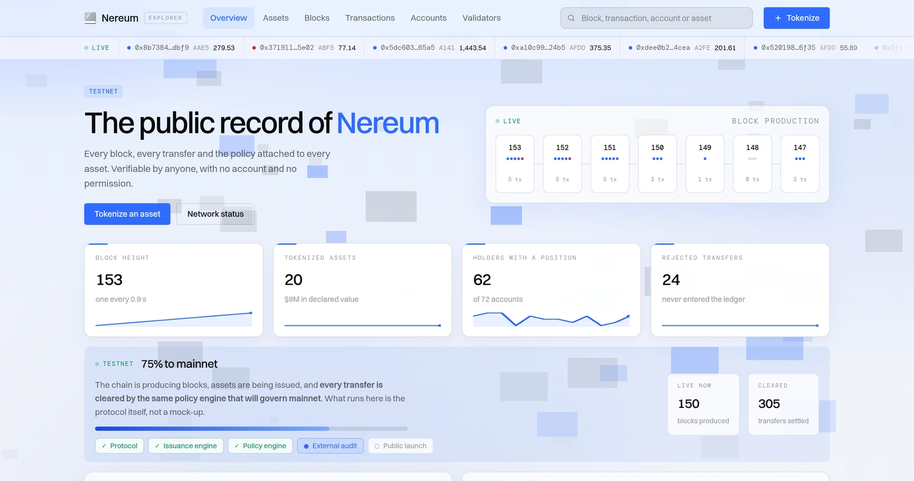
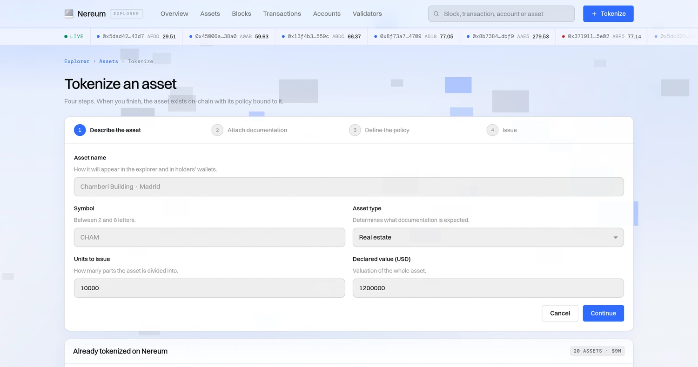

Nereum

MIGRATION
The chains it settles on and the wallets it already works with. Nothing to install, nothing to migrate.

Trust WalletMetaMaskBinance Wallet EthereumBinance Smart ChainVenture CapitalDexScreener Trust WalletMetaMaskBinance Wallet


When value moves, the rules have to move with it. On Nereum the rules travel with the asset and hold at machine speed — for desks and contracts alike.
A new chain asks for trust up front. These are the three places where ours is verifiable by someone who is not us.
Florida, United States
Nereum Labs LLC is incorporated in the State of Florida. The filing is public record and can be checked against the state registry — name, status, date and registered agent.
Independent review
Every contract that touches Seed Round funds has been reviewed by an independent security firm. The full report is published, including the findings and how each one was resolved.
Verified identities
The founders are not anonymous. Identity documents for every signer on the treasury have been verified by a third party and are held for disclosure to regulators and exchanges.
Nothing hidden between them. What you pay today and what it lists at are both on this page.
0x3A2f46170E57DDF11135e13884db0236f1924292
Robinhood Chain · ERC-20
Verified
Ownership renounced

Own validators, own consensus, EVM-compatible. Every transfer is cleared against the asset's policy before it is written — in the protocol, not in a contract on top.
Open the explorer →
Describe the asset, attach its documentation, choose the conditions that travel with it, and issue. No custom contract to write and no audit to commission for every issuance.
Tokenize an asset →Physical servers we own and operate, powered by solar. Not rented hashrate and not a reseller's contract: machines in racks, with their own energy behind them.
The company registered, the contract deployed and verified, and the first raise closed. Every one of them checkable by someone who is not us.
The chain and the interfaces that sit on top of it, built and out in the open, with a price anyone can look up.
The infrastructure ceases to be a decision factor for the issuer, in the same way interbank payment rails are not one today.
Build, launch and scale your product with the right resources and support.
Get started →Get a wallet, claim NRM and explore the instruments on the network.
Get started →Events, blogs, press, videos, podcasts and livestreams — all in one place
Every signer on the treasury is identity-verified by a third party. No pseudonyms, no placeholders.
Founder & CEO
Strategy, capital and regulatory relationships.
Chief Technology Officer
Protocol architecture, consensus and the settlement engine.
Head of Compliance
Issuance policy, audits and exchange onboarding.
Identity documents held in escrow · disclosed to regulators and exchanges on request
No private groups, no paid signals. The same information reaches everyone at the same time.